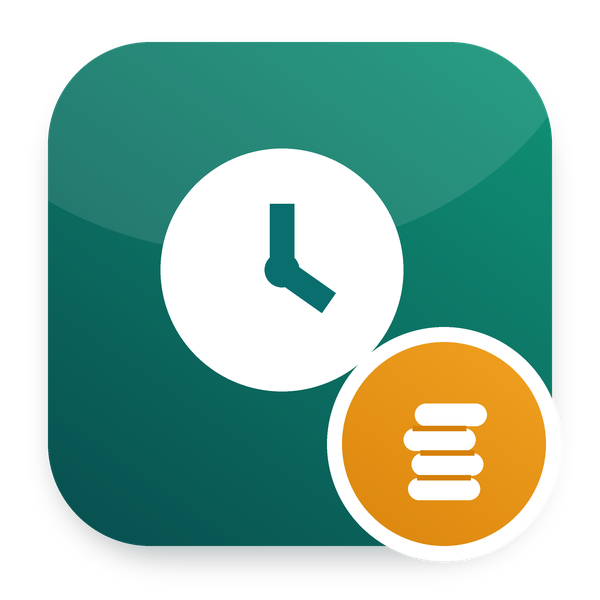

This app is part of Odoo 20 HRMS - Odoo Mates: the whole HR suite in one download, 62 modules for Odoo 20. Payroll, loans, exits and gratuity, documents and signatures, appraisals, shifts, approvals, the employee portal. Download once, install only what you need.
Get Odoo 20 HRMS - Odoo Mates, every app at once →
The lateness penalties of a month taken off the payslips
Part of Odoo 20 HRMS - Odoo Mates · Odoo 20 Community and Enterprise
The penalties of the month become a Lateness deduction on the payslip
Fixed amount, % of the daily wage or minutes at the hourly wage, within a cap
Computed again after an excuse, until a confirmed payslip has taken it
ADJ_LATE, a deduction, its own payslip line), taken by the payslip of the month.Works with Odoo 20 Community and Odoo 20 Enterprise. On Enterprise, it cannot be installed together with the Enterprise Approvals and Payroll apps: both define the same records. Use one or the other.
om_hr_payroll, om_hr_lateness, om_hr_payroll_adjustment. It installs by itself once they are all installed.
Odoo Mates HR
The HR suite of Odoo Mates for Odoo 20: every module installs on its own, the links between them are bridges.
Support: odoomates@gmail.com